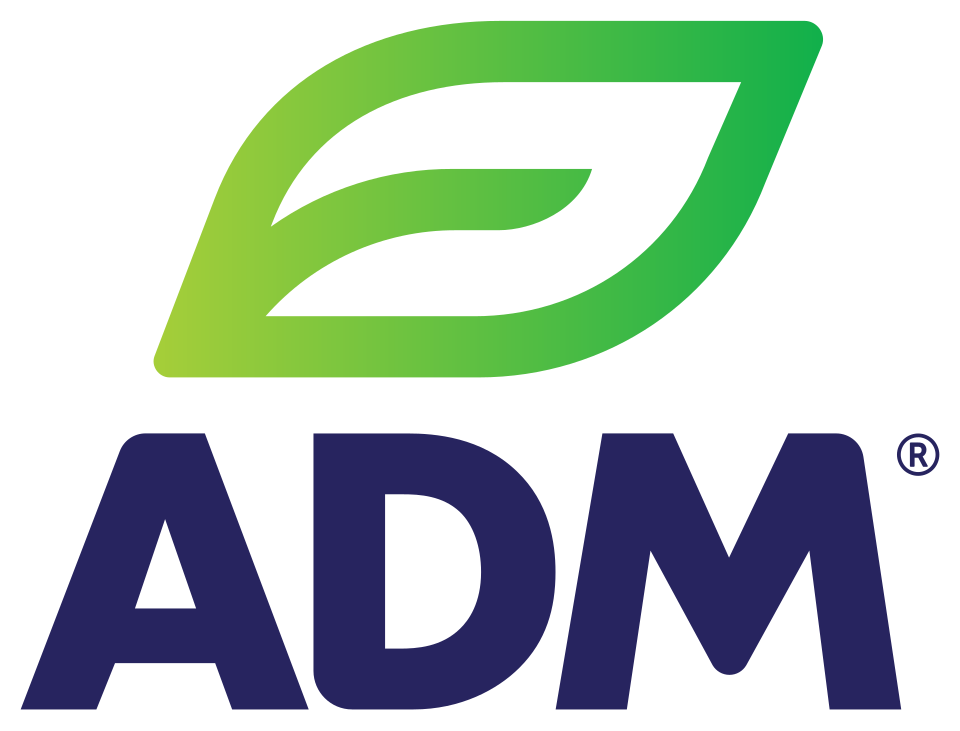

아처 대니얼스 미들랜드 Archer Daniels Midland
아처 대니얼스 미들랜드(Archer Daniels Midland)는 농산물을 가공하고 원자재를 거래하며 저장과 운송 서비스도 제공하는 미국의 다국적 기업이다.
최종 업데이트

아처 대니얼스 미들랜드는 어떤 브랜드인가
ADM은 식품 가공과 원자재 거래를 핵심 사업으로 운영한다. 농산물 저장과 운송 서비스도 제공하며 American River Transportation Company와 ADM Trucking, Inc.를 자회사로 둔다.
1902년 시작한 아마씨 분쇄 사업을 바탕으로 유지 가공, 곡물, 제분과 대두 가공 분야로 사업을 확장했다. 이후 인수와 해외 진출을 통해 국제 농산물 가공 및 곡물 거래 사업을 확대했다.
2023년 미국 최대 기업을 대상으로 한 Fortune 500에서 35위를 기록했다.
아처 대니얼스 미들랜드는 어떻게 시작되고 성장했나
1902년 John W. Daniels가 미국 미니애폴리스에서 아마씨 분쇄 사업을 시작했으며, 창업자 George A.
Archer는 이듬해 사업에 합류했다. 회사는 1905년 Archer-Daniels Linseed Company라는 이름을 채택했다.
1923년 Midland Linseed Products Company를 인수한 뒤 Archer Daniels Midland Company로 법인화했으며, 당시 미국 아마씨 제분 능력의 35%를 통제했다. 1924년 뉴욕증권거래소에 상장했고, 이후 인수와 곡물 부문 신설을 통해 유지 가공과 농업 사업을 확대했다.
1970년 이후에는 여러 농업 회사를 인수하고 국제 시장으로 사업 범위를 넓혔다.
아처 대니얼스 미들랜드의 브랜드 아이덴티티는 무엇인가
농산물의 가공과 원자재 거래에 저장·운송 기능을 결합해 생산 이후의 유통 기반까지 함께 운영하는 사업 구조가 특징이다.
아처 대니얼스 미들랜드의 대표 제품과 서비스는 무엇인가
회사는 식품 가공과 농산물 원자재 거래를 수행하고 농산물 저장 및 운송 서비스를 제공한다. 운송 사업에는 자회사인 American River Transportation Company와 ADM Trucking, Inc.가 참여한다.
초기에는 아마씨 분쇄를 중심으로 사업을 전개했으며 이후 밀가루 제분, 대두유 생산, 곡물 저장과 국제 곡물 거래로 범위를 확대했다. 1965년에는 조직화 식물성 단백질의 원천 특허를 등록했고, 1966년부터 대두분 제품을 생산했다.
아처 대니얼스 미들랜드는 지금 어떤 상태인가
미국 시카고의 77 West Wacker Drive에 본사를 둔 다국적 식품 가공 및 원자재 거래 기업이다. 2023년 Fortune 500에서 미국 기업 가운데 35위를 기록했다.
농산물 가공뿐 아니라 저장과 운송을 사업에 포함하며 관련 운송 자회사를 운영한다.
아처 대니얼스 미들랜드 로고는 어떻게 변해왔나
자주 묻는 질문
아처 대니얼스 미들랜드는 어느 나라 브랜드인가요?
아처 대니얼스 미들랜드는 미국의 식음료 브랜드입니다.
아처 대니얼스 미들랜드는 언제 설립되었나요?
아처 대니얼스 미들랜드는 1902년 설립되었습니다.
아처 대니얼스 미들랜드의 브랜드 아이덴티티는 무엇인가요?
농산물의 가공과 원자재 거래에 저장·운송 기능을 결합해 생산 이후의 유통 기반까지 함께 운영하는 사업 구조가 특징이다.
아처 대니얼스 미들랜드의 대표 제품은 무엇인가요?
회사는 식품 가공과 농산물 원자재 거래를 수행하고 농산물 저장 및 운송 서비스를 제공한다.
아처 대니얼스 미들랜드는 현재 어떤 상태인가요?
미국 시카고의 77 West Wacker Drive에 본사를 둔 다국적 식품 가공 및 원자재 거래 기업이다.
아처 대니얼스 미들랜드의 창업자는 누구인가요?
아처 대니얼스 미들랜드의 창업자는 George A. Archer입니다(위키데이터 기준).
아처 대니얼스 미들랜드의 본사는 어디에 있나요?
아처 대니얼스 미들랜드의 본사는 77 West Wacker Drive에 있습니다(위키데이터 기준).
출처와 검증
아처 대니얼스 미들랜드 관련 참고: 공식 웹사이트 · 위키데이터 Q632694 · 한국어 위키백과 · 영어 위키백과. 브랜드명은 한글과 원어를 함께 표기하되 데이터에 없는 표기는 만들지 않습니다. 기원 국가·설립연도는 검수된 정의문에서 확인된 값을 우선하고, 없을 때만 공식 웹사이트 URL이 일치하는 위키데이터 개체의 값을 씁니다. 위키데이터 값은 2026-09-12 기준입니다.